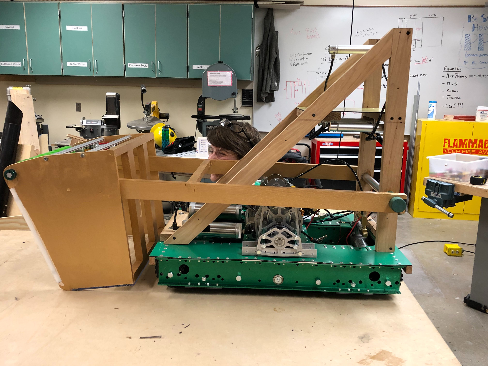

Blog
Welcome, here you can stay up to date with the team's most recent experiences, and get updated with upcoming events!
St. Joseph District Event
SHAM-ROCK-BOTICS, 3/11/2019

The team with our Judge's Award
The St. Joseph District event was the first for the majority of the SHAM-ROCK-BOTICS members. We got a sneak peak of how FIRST Robotics Competitions operated at the two off-season events we attended. Though, going to an actual
competitive competition was a totally new experience where we made plenty new discoveries in the world of FIRST.
We as a team also encountered a few challenges throughout our competition. One problem we encountered was that in our first match, one of the two supports for our main mechanisms got a hairline fracture, disabling it,
though we quickly strapped together a fix, which lasted us throughout the entire rest of the competition. However, our drive team was able to get familiar with our robot’s mechanisms and was able to perform at their best during
the matches. In the end, we were pleased with the 2019 Deep Space Judge’s Award, which represents our hard work and drive to explore in SHAM-ROCK-BOTICS.
One of our rookie members, Caleb, took the St. Joseph event to heart, even though he has attended previous FTC and off season events, he mentioned that it was a much stronger experience such as cheering and bonding with
teammates, and the atmosphere was more competitive. Caleb enjoys scouting and noticed that scouting was taken more seriously at the competitive events. We asked him for an important lesson he learned, Caleb responded with,
“Claim your seats in the stands early, and protect them with your life.”
SHAM-ROCK-BOTICS were proud of the show we put on at our first event, and is thrilled to see everyone again at Tippecanoe!
Robot Showcase
SHAM-ROCK-BOTICS, 2/9/2019
Here is our amazing robot at the end of build Week 6!
We are very excited to show off this bot for the Robot Showcase. We spent six long weeks designing, building and programming this bot.